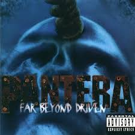

Far Beyond Driven er sjöunda stúdíóplata bandarísku þungarokkshljómsveitarinnar Pantera, gefin út 22. mars 1994 af Elektra Records og East West Records. Hraðast selda plata Pantera, hún náði hámarki í 1. sæti á Billboard 200 og var vottuð platínu af RIAA. Platan var einnig platínuvottuð af Canadian Recording Industry Association. Far Beyond Driven er fyrsta plata Pantera þar sem gítarleikari sveitarinnar Darrell Abbott er talinn „Dimebag Darrell“, en hann breytti gælunafni sínu úr „Diamond Darrell“ fljótlega eftir að Vulgar Display of Power kom út.